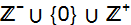
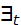
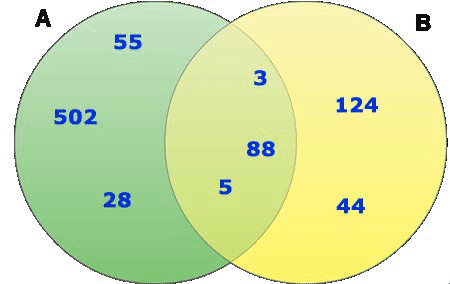

Genel Matematik
Bölüm 1 - Başlangıç Bilgileri
Küme kuramı Cantor ile başladı ve
matematik
mantık ile birlikte matematiğin temeli haline geldi.
1.3 - Sezgisel Kümelere Giriş
1.3.1 - Georg Cantor Üzerine
Georg Ferdinand Ludwig Philipp Cantor St. Petersburg (okunuşu:
Zankt Peetersburg, Sovyetler döneminde adı Leningrad olarak
değiştirilmiş, bugün eski adı ile tanınıyor) şehrinde
1845 yılında doğmuş. Ailesi Almanya’ya taşınımış
Berlin Üniversitesinde tezini tamamlamış, Halle Üniveritesinde
Matematik Profesörü olarak çalışmış,
tüm kariyerini Halle’de (kendisi istememesine karşın)
tamamlamak zorunda kalmıştır. Yaşamını
1918 de kaybetmiştir.
Cantor (okunuşu: Kantor, anlamı: şarkıcı -Latince-)
(Cantor, müzisyen bir aileden gelmiştir. Atalarının
sinagogda ilahi söyleyenlerden olduğu için, şarkı
söyleyen anlamında Cantor soyadını almış
oldukları düşünülmektedir) “Kümeler
Kuramı” üzerine ilk yazısını 1874 de
Crelle Journal de zorlukla yayınlatabildiği, “Ueber
eine Eigenschaft des Inbegriffes aller reellen algebraischen Zahlen” “Gerçel
Cebirsel Sayıların Tümüne İlişkin bir Özellik Üzerine”
olarak yayınlamış, bu yazısında kümeler
kuramını tanıtmıştır.
Kümeler kuramı, kısa süre içinde büyük
kabul görmüş, matematiğin temeli olarak nitelendirilmiş
fakat, bir o kadar da eleştiri ile karşılaşmıştır.
Kümeler kuramı bugün için büyük bir
buluş olarak kabul edilerek “Modern Matematik” adı
ile tüm dünyada yaygın olarak öğretilmekte
ve “Matematik Mantık” ile birlikte matematiğin
temeli olarak kabul edilmektedir. Kümeleri destekleyen, formalist
görüşe sahip olan büyük matematikçi
David Hilbert “Cantor’un bizim için kurduğu
cennetten bizi kimse kovamaz” demiştir.
Kümeler kuramına en çok karşı çıkan
ve Cantor’un Berlin Üniversitesine atanmasını engelleyen
Leopold Kronecker olmuştur. Ayrıca, Henri Poincaré,
Hermann Weyl, Ludwig Wittgenstein daha sonra da Luitzen Egbertus Jan
Brouwer de eleştirenler arasındadır. Ayrıca, Cantor’un
belirttiği “Transfinit Sayılar” bazı dinsel
kaynaklarca, Tanrının birliğine karşı çıkar
gibi nitelendirilmiş ve böyle bir amacı olmayan (Atalarının
Musevî asıllı olduğu düşünülmesine
karşın) inanmış bir Lüteryen olan Cantor, bu
yoruma çok üzülmüştür.
Yaşamında, kümeler kuramının büyük
kabul görmesi yanında, haksız ve ağır eleştiriler
alması, hassas ve etkilenen bir psikolojisi olan Cantor’un
birkaç kez depresyon geçirmesine ve yaşamını
erken yitirmesine neden olmuştur.
1.3.2 - Küme Kavramı
Kümeler, prensipte, belirgin tanımı olan, belirli bir
sıralanma şekli olmayan, birbirlerinden farklı nesnelerin
topluluğu olarak tanımlanırlar.
Kümeleri oluşturan nesnelere kümelerin elemanları
adı verilir. Kümelerdeki elemanlanların belirli bir sıralanması
yoktur. Kümeler, aynı nesneden sadece tek bir eleman içerebilirler.
Belirgin tanımı olan nesneler, herkes tarafından nesnelliği
tartışmasız olarak kabul edilebilecek nesnelerdir. Örnek
olarak tamsayılar bir küme oluşturabilrler, çünkü
her tamsayının niteliği bellidir, şahıslara
göre değişmez. Aynı şekilde Ali Nesin’e
göre, “Doğmamış Eşekler” de bir
küme oluşturabilirler. Bu eşekler bugün yaşar
olmasalar da, eninde sonunda doğacaklar ve küme oluşturabileceklerdir.
Kümelerin oluşturulması için, hiçbir sınırlama
yapılmayan sisteme, “Sınırsırsız İçerik
Kuramı” (Unrestricted Comprehension) adı verilir. Sınırsız
içerik kuramına göre oluşturulmuş kümelere, “Sezgisel
Kümeler Kuramı” adı verilir. Sezgisel kümeler
kuramı aynı zamanda, “Nahif Kümeler Kuramı”
(Naïve Set Theory) olarak adlandırılır. Nahif, yani
kırılgan bir sahıs, hiçbir kuralı benimsememiş
kimse olarak nitelendirilir. Küme oluşumunu daha belirgin
kurallara bağlayan sistemlere, “Aksiyometrik Kümeler
Kuramı” adı verilir.
Kümelerin, kuralsız olarak oluşturulması, 1885 de
Cantor, 1897 de Burali_Forte, 1901 de Russell ve 1905 de Richard tarafından
belirtilmiş olan çelişki (paradoks) lardır. Bunlardan
en yıkıcı olanı Russell paradoksu olmuştur.
Matematik, kümeler kuramı ve matemetik mantık çerçevesinde
açıklandığından, kümeler kuramınında çelişki
kabul edilemez. Bu yüzden, kümeler kuramında çelişkileri önlemek
amacı ile, kümelerin oluşumuna bazı sınırlamalar
getiren aksiyomlara dayanan küme kuramları geliştirilmiş
ve bu sistemlere “Aksiyometrik Kümeler Kuramı”
adı verilmiştir. Belirli bir aksiyom sisteminin kuralları
gözetilerek oluşturulmuş küme içeriklerine, “Sınırlanmış İçerik”
(Restricted Comprehension) adı verilir.
Küme aksiyomları, birkaç tanedir, fakat içlerinde
en tanınmış olanı (Zermelo-Frenkel) (ZF) ve ek olarak, “Seçim
Aksiyomu” (Axiom of Choice) un da uygulandığı,
(ZFC) aksiyom sistemidir.
Hilbert, uygun aksiyomların uygulaması ile çelişkilerinden
arındırılmış bir kümeler kuramı ve
matematik mantık kurallarına göre oluşturulmuş
formüller yardımı ile tüm matematiğin açıklanabileceğini
düşünerek formalist bir program üzerine çalışmıştır.
Bu çalışma, Gödel’in “Eksiklik Kuramı”
nedeni ile tam olarak başarıya ulaşamamış,
fakat matematiğin formülasyonunda önemli ilerlemeler
kaydedilmiştir. Bugün hem bu program, hem de kümeler
kuramı son derece yararlı ve başarılı bulunmaktadır.
Bu çalışmamızda, “Sezgisel Kümeler”
yöntemini inceleyeceğiz. Bunun nedeni, sezgisel kümeler
yönteminin küme ilikilerinin incelenmesi için en koay
anlaşılır ve kişileri sınırlandırmayan özgür
bir yöntem olmasıdır. Gerçek yaşamda sezgisel
küme yöntemi uygulanmaz, küme oluşumlarını
sınırlayan “Aksiyometrik Kümeler” kuramı
uygulanır. Bunun nedeni, en önemlisi 1902 de Lord Bertrand
Russell tarafından bulunmuş olan (üç yıl önce,
Göttingen Üniversitesinde Hilbert’in ekibinden Ernst
Zermelo tarafından da farkedilmiş fakat yayınlanmamıştır)
Russell Çelişkisidir. Bu aksiyomların en kabul görmüş
olanı ZFC (Zermelo-Frenkel) aksiyom sistemidir. Bu sistem sadece
küme oluşumlarını ve sonsuz sayıda eleman içermelerini
sınırlamakta, fakat küme ilişkileri aynı sezgisel
küme yönteminde olduğu gibi geçerli kalmaktadır.
Sezgisel kümeler sisteminde incelenmiş olan yöntemler,
aynen ZFC aksiyometrik kümeler kuramında da belirli aksiyomların
küme içeriklerini ve kümelerin eleman sayısını
sınırlaması dışında geçerli olacaktır.
Bu nedenle, bu çalışmada ilk aşamada öğrenilmesi
sezgisel kümeler yöntemi incelenmiştir.
1.3.3 - Küme Tanıtımı
Kümeler iki türlü tanıtılablir. Birincisi eklentisel
(extensional) tanıtımdır. Bu tanım aynen Python
programlama dilinde uygulandığı gibi, küme elemanlarının
büyük süslü parantezler arasında listelenmesidir.
Küme adları büyük harflerle belirtilir. Kümelerin
içerdiği nesnelere “Küme Elemanları”
adı verilir. Küme elemanları küçük harflerle
belirtilir.
Küme kavramı kurallarına göre,
Bir kümede birbirinin aynı iki eleman olamaz.
Kümeler, küme elemanı olabilirler.
Küme elemanlarının belirli bir düzene uyma zorunluğu yoktur.
Sezgisel küme kavramına göre,
Her türlü nesneden küme oluşturulabilir. (“Sınırsız İçerik” , “Unrestricted Comprehension” kuralı).
Küme elamanları sonsuz sayıda olabilirler.
Örnek olarak,
A = {"Ahmet Uzun", "Veli Dağ" , 12 , 5}
tanımı verilebilir. Bu tanımla, A kümesinde hem
sayısal hem de sözel elemanların bulunduğu görülmektedir.
Liste yöntemi ile küme tanımı, az sayıda ve
farklı türde elemanlar içeren kümeler için
uygundur.
Bir kümede, küme elemanları da küme olabilirler. Örnek,
A = {17 , {25 ,28} , 45}
Eğer iki küme, aynı elemanları içeriyorlarsa,
bu iki küme, “Eşit Kümeler” olarak tanımlanır. Örnek,
A = {25 , 8} = {8 , 25} = {8 , 8 , 8 , 25 , 25}
Buradan görüldüğü gibi, iki kümede eleman
sırasının farklılığı kümelerin
eşit olmasını engellemez. Ayrıca, yine aynı
tanımdan, aynı elemanı birden fazla içermesi istenen
kümelerde, fazladan aynı elemanlar yok sayılır ve
küme yapısını etkilemez (“Genişleme Aksiyomu”)
(Axiom of Extensibility).
Bir A kümesinin elemanları, bir B kümesi ile aynı
değilse, bu iki küme birbirlerine eşit değillerdir.
Farklı kümeler, A ≠ B olarak gösterilir.
Bir kümenin elemanı olmak,
x ∈ A olarak belirtilir. Bu tanım, “x, A kümesinin
bir elemanıdır” şekilnde okunur. Eğer,
x ∉ A
olarak belirtilmişse, bu “x A kümesinin bir elemanı
değildir” anlamına gelir.
Yukarıdaki kümede,
8 ∈ A , 25 ∈ A , 12 ∉ A , 32 ∉ A
olarak belirtilebilir.
Bir kümenin eleman sayısı, o kümenin kardinalliği
olrak nitelendirilir ve |A| olarak belirtilir. Yukarıdaki kümenin
kardinalliği 2 dir. Bu |A| = 2 olarak gösterilir.
Kümelerin eklentisel (listeleme) yöntemi ile tanıtılmaları
sadece az sayıda ve değişik tipte elemanlar içeren
kümeler için uygundur. Kümelerin türdeş elemanlar
içerenleri, daha işlevsel ve matematik için daha
kullanışlıdır. Türdeş elemanlar içeren
kümelerin eleman sayıları olağanüstü yüksek
olabilir. Bu durumda, listeme yöntemi yeterli olmaz, amaca yönelik
(intensional) küme tanımından yararlanmak gerekli olur.
Küme yapıcı ifadenin genel açıklaması,
{x | Φ(x)}
şeklindedir. Burada x, küme elemanları, Φ(x) , x elemanlarının
bir özelliği (yüklem) (predikat) dır. Örnek
olarak,
A = {x | x ∈ Fenerbahçeliler}
Bunun anlamı, A kümesinin elemanlarının, daha önceden
tanımlanmış olan Fenerbahçeliler kümesinin
elemanları arasından şeçileceğidir.
Küme yapıcı ifade ile, birbirleri ile aynı özellikleri
paylaşan elemanlardan oluşan istendiği kadar eleman içeren
kümeler oluşturulabilir. Örnek olarak, eğer x belirli
bir özellik (yüklem) (predikat) (predicate) ise, bu özelliği
sağlayan elemanlardan oluşan küme,
A = {x| P(x)} veya A = {x: P(x)}
olarak belirtilir. Burada, P öyle bir yüklemdir ki, her x
elemanı bunu karşılamaktadır. Gerektiğinde
bu tanım, x değişkeninin başka bir tanımlı
kümenin elemanı olduğunu ve aynı zamanda da bu yüklemi
sağladığını belirtecek şekilde genişletilebilir. Örnek
olarak çift pozitif sayılardan oluşan bir küme,
A = {x = bir çift sayı | A(x)}
olarak belirtilebilir. Doğal olarak bu tanımın biraz
sonra göreceğimiz gibi, matematiksel bir notasyonla açıklanma
yöntemi bulunmaktadır.
Bir başka küme tanımı,
A = {x (x bir tamsayıdır) | (0 ≤ x ≤ 20)}
Tamsayılar 0 dahil pozitif ve negatif tamsayılardan oluştuğuna
göre (Bk. biraz aşağıdaki tamsayılar kümesi
tanımı), bu tanım, A kümesinde, 0 (dahil) , 20 (dahil)
aralığında 21 tane tamsayı elemanı içerebileceğini
belirtir. Bu tanımla, A kümesi,
A = {0 , 1 , 2, ..., 20}
şeklinde belirtilebilir. Birbirbirini izleyen üç nokta “Elipsis
Noktaları” olarak adlandılır ve aradaki değerlerin
belirtilmesinde kullanılır. Elipsis noktaları bir sekans
(birbirini izleyen işlemler) tanımıdır. Elipsis
noktasının değerlendirilmesinde,
İlk olarak, birbirini izleyen elemanlar arasındaki fark Δ (delta) belirlenir. Burada Δ = 2 -1 = 1 dir.
Elipsis noktasından önce belirtilen değerden bir sonraki değer, bir önceki değere Δ eklenerek bulunur. Burada 2 den sonraki eleman 2 +1 = 3 dür. 3 den sonra gelecek eleman 3 + Δ = 3 +1 = 4 olacaktır. Sekans bu şekilde devam eder.
Sekans, son değer olarak belirtilmiş 20 ye ulaşılınca sona erdirilir.
Buradan, bir elipsis sekansı belirtildiğinde, bu sekansın
ardışık (birbirini izleyen) değerlerinin hesaplanabilmesi
için, en az iki ardışık değerin verilmesi
gerektiği ortaya çıkar.
İki tane sayı belirten notasyon,
∀ = Tümü
∃ = Bazıları (En az bir tane)
olarak belirtilir. Örnek olarak, ∀x (x <5) , “Tüm
x ler 5 den büyüktür” anlamına gelmektedir. ∃x
(x = 8) “Bazı x ler, 8’e eşittir” veya “En
az bir tane x, 8’e eşittir”, şeklinde değerlendirilir.
Bazı temel kümeler, öntanımlıdır. Bunlar,
N = {1, 2, 3, 4, 5,...} Doğal
Sayılar Kümesi (Lat. Naturalis = Doğal).
Doğal sayılar kümesi üzerinde ne yazık ki bir
fikir birliği sağlanamamıştır.
Modern düşünce, daha çok sıfır sayısını
doğal sayılar kümesinin elemanı olarak kabul etmezken,
eski düşünce, sıfır sayısını
doğal sayılar kümesinin bir elemanı olarak kabul
etmektedir. Bu çalışmada doğal sayılar kümesi,
yukarıda tanımlandığı gibi 1 den başlayan
ve üst sınırı olmayan sayılar olarak kabul
edilmiştir.
Z = {...,-4, -3, -2, -1, 0, 1, 2,
3, 4,...} Tamsayılar kümesi (Alm. Zahlen = Sayılar)
Q = Rasyonel sayılar (Orantılar)
(Alm. Quotient = Kesir)
R = Gerçel sayılar (ondalıklı
sayılar) (Alm. Real = Gerçel)
Burada, ilk olarak tamsayılar (Zahlen) kümesinden başlayacağız.
Kronecker, ”Tanrı tamsayıları yarattı, gerisi
sadece insan yapısıdır!” demiştir. Gerçekten
tamsayılar tüm sayıların yapıtaşlarıdır.
Tamsayılar kümesinin elemanlarının belirli bir büyüklükten
büyük, sıfır ve belirli bir büyüklükten
küçük tamsayılardan oluştuğu görülüyor.
Ne en küçük, ne de en büyük sayı erişilebilir
değildir. Bu sayılar düşünebildiğimiz
en küçük sayıdan daha küçük,
düşünebildiğimiz en büyük sayıdan
daha büyük olan sayılardır. Eskiden eksi sonsuz,
artı sonsuz olarak tanımlanan bu kavramlar, bugün için
bilinemez olarak kabul edilmektedir. Sonsuz simgesi kullanılmadığında,
Tamsayılar kümesi,
Z = {x | -x ≤ 0 ≤ x}
olarak tanımlanabilir. Diğer bir tanım da, tamsayılar
kümesini,

negatif tamsayılar, sıfır kümesi (boş küme)
ve pozitif tamsayılar kümelerinin birleşim kümesi
olarak açıklanmasıdır.
Sonsuzluğun ilk filosofik tanımı, hemşehrimiz Miletuslu
bir Sokrat öncesi filosof olan Anaksimander tarafından, “Apeiron”
(sınırsız) tanımlaması ile yapılmıştır.
Hemen onu izleyen matematik tanım, Parmenides’in öğrencisi,
Elea’lı Ksenon (Zeno) tarafından “Çok anlaşılmaz
ve derin” olarak tanımlanmıştır. Euclides,
bugünkü tanım gibi, “en büyük olarak
tanımladığımızdan daha büyük”
olarak tanımlamıştır. Lemniskat olarak da adlandırılan ∞
sembolü, ilk olarak 1655 de John Wallis tarafından kullanılmıştır.
Euler bu sembolü kullanmış ve ondan sonra sonsuzluk tanımı
için Lemniskat sembolünün kullanımı yaygınlaşmıştır.
Sonsuzluğun tanımı gözönünde tutuldukça,
Lemniskat sembolünün kullanımında hiçbir
sakınca yoktur. Tam aksine bu sembol, matematik notasyon için
vazgeçilmez bir konumdadır.
Sonsuzluk için Lemniskat sembolü kullanıldığında,
tamsayılar kümesi,
Z = {x | -∞<-x ≤ 0 ≤
x<∞}
olarak tanımlanabilir.
Negatif tamsayılar, olarak da
gösterilirler. Tanımları,
 = {x | x < 0}
= {x | x < 0}
 = {...,-2, -1}
= {...,-2, -1}
şeklindedir. Negatif tamsayılar kümesinde en küçük
eleman -1 dir. Sıfır, negatif tamsayılar kümesinin
bir elemanı değildir.
Pozitif tamsayılar, olarak da
gösterilirler. Tanımları,
 = {x | 0>x}
= {x | 0>x}
 = {1, 2, 3, ...}
= {1, 2, 3, ...}
şeklindedir. Pozitif tamsayılar kümesinde en küçük
eleman 1 dir. Sıfır, pozitif tamsayılar kümesinin
bir elemanı değildir. Pozitif tamsayılar kümesi,
sıfırın dışarıda tuttulduğu doğal
sayılar kümesi ile eşit kümedir.
Rasyonel sayılar (orantılar) (Quotients) kümesi,
Q = {x ∈ R | (∃ m,n ∈ Z ) [(m > 0 , mx = n]}
olarak tanımlanır. Bu notasyon açık değildir.
Açıklanmak istenen, oranlı (rasyonel) sayılar
kümesinin elemanlarının, tamsayılar kümesi
elemanlarından istenildiği gibi seçilecek m ve n elemanlarından
oluşacağı, m sayısının sıfırdan
büyük tamsayılar arasından seçileceği
ve x bir gerçel sayılar kümesi elemanı olarak,
oranlı sayılar kümesinin elemanlarının, mx
= n eşitliğinin sağlanacağı,  oranlarından
oluşacağı belirtilmektedir.
oranlarından
oluşacağı belirtilmektedir.
Açık olmamasına karşın bu tanımın
verdiği en önemli bilgi, elemanların  oranlarından
oluşacağı, fakat bu oranlarının sonucunun,
rasyonel sayılar kümesinin değil, gerçel sayılar
kümesinin elemanlarından birisi olacağıdır.
Bu çok önemli bir bilgidir. Tamsayılar kümesi
elemanları 2, 3 gibi tam değerlerden oluşmaktadır.
Bu değerler yaklaşık değerler değillerdir.
Bu sayılar iki çaydanlık, üç kaşık
gibi, parçalanamaz değerleri belirtmektedir. Bu değerlerin
ondalık kısımları yoktur. İki buçuk çaydanlık
ancak üç tane çaydanlığın birisi kırıldığında
ortaya çıkar. O zaman da bu bir yaklaşık değer
olur, çünkü çaydanlığın tam yarısından
kırıldığı kesin değildir. Oysa üç çaydanlık
kesin bir sayıdır. Bilgisayar 3 sayısını tam
3 olarak belleğinde tutar. Bu yüzden von Neumann bilgisayarların
yapımında, sadece tamsayıların kullanılmasını
istemiştir. Bu doğaldır, matematik kesin olan tamsayılar
ile çalışır. Oysa yaşam gerçel sayılar üzerinden
düzenlenmiştir. Bu yüzden, bilgisayarların yapımında,
matematikçilerin değil, mühendislerin istedikleri olmuştur.
Yine de kesin değerlerin önemi büyüktür ve
rasyonel sayılar kümesinin elemanları olan oran (ratio)
lar kesin değerlerdir. Bu değerler gibi gibi, kendileri de oranları da (sonucunun hesaplanmaması kaydı
ile) kesin olan değerlerdir.
oranlarından
oluşacağı, fakat bu oranlarının sonucunun,
rasyonel sayılar kümesinin değil, gerçel sayılar
kümesinin elemanlarından birisi olacağıdır.
Bu çok önemli bir bilgidir. Tamsayılar kümesi
elemanları 2, 3 gibi tam değerlerden oluşmaktadır.
Bu değerler yaklaşık değerler değillerdir.
Bu sayılar iki çaydanlık, üç kaşık
gibi, parçalanamaz değerleri belirtmektedir. Bu değerlerin
ondalık kısımları yoktur. İki buçuk çaydanlık
ancak üç tane çaydanlığın birisi kırıldığında
ortaya çıkar. O zaman da bu bir yaklaşık değer
olur, çünkü çaydanlığın tam yarısından
kırıldığı kesin değildir. Oysa üç çaydanlık
kesin bir sayıdır. Bilgisayar 3 sayısını tam
3 olarak belleğinde tutar. Bu yüzden von Neumann bilgisayarların
yapımında, sadece tamsayıların kullanılmasını
istemiştir. Bu doğaldır, matematik kesin olan tamsayılar
ile çalışır. Oysa yaşam gerçel sayılar üzerinden
düzenlenmiştir. Bu yüzden, bilgisayarların yapımında,
matematikçilerin değil, mühendislerin istedikleri olmuştur.
Yine de kesin değerlerin önemi büyüktür ve
rasyonel sayılar kümesinin elemanları olan oran (ratio)
lar kesin değerlerdir. Bu değerler gibi gibi, kendileri de oranları da (sonucunun hesaplanmaması kaydı
ile) kesin olan değerlerdir.
Rasyonel sayılar kümesi elemanları, küme tanımı
gereğince, aynı elemandan sadece bir tane örnek içerebileceğinden,
elemanlarının me ve n arasında ortak bölen olmayan oranlarından oluşması gerekmektedir. Örnek olarak, bir rasyonel sayılar kümesi elemanı değildir. Çünkü,  =
=  dir ve rasyonel sayılar kümesinin elemanı, oranıdır.
Diğeri onun birebir kopyası (duplikatı) dır ve rasyonel
sayılar kümesinin elemanı değildir.
dir ve rasyonel sayılar kümesinin elemanı, oranıdır.
Diğeri onun birebir kopyası (duplikatı) dır ve rasyonel
sayılar kümesinin elemanı değildir.
Paydası sıfır olan oranlar, belirsiz değerlerdir ve rasyonel sayılar kümesinin elemanları değildir. Hiçbir uygulamada, bir değer sıfıra bölünmemelidir.
Rasyonel sayılar kümesinin elemanları olan , gibi değerler
aynı zamanda 3, 34 gibi değerler olduklarından, bazı
rasyonel sayılar kümesi elemanları, aynı zamanda
doğal sayılar kümesinin de elemanlarıdır. Tüm
doğal sayılar kümesi elemanları, aynı zamanda
rasyonel sayılar kümesinin de elemanlarıdır, fakat
tersi doğru değildir.
Belirtilmeleri 1 (bir tam
iki bölü üç) şeklinde olan oranlar, rasyonel
sayılar kümesi elemanlarıdır. Bu oranların
açılımı 1  = 1 +
= 1 +  = = (pay + payda) /payda şeklindedir.
= = (pay + payda) /payda şeklindedir.
Rasyonel sayılar kümesi elemanlarının daha kısa
ve daha anlaşılır bir açıklaması,
Q = { | m,n ∈ Z , n ≠ 0}
şeklindedir. Buradan rasyonel sayılar kümesi elemanlarının
birer tamsayı oranı olduklarını ve bundan dolayı
yaklaşık bir sayı olmadıklarını belirtir.
Bu tanımda belirtilemeyen nokta ise, rasyonel sayılar kümesi
elemanlarının değerlerinin gerçel sayılar
kümesinin elemanları olduğu ve bu yüzden, birer
yaklaşık sayı olduklarıdır. Yani, rasyonel
sayılar kümesi elemanları, bir tamsayılar orandır,
dolayısı ile kesin bir değerdir. Bazı oranlar tamsayı
sonucunu verirler ve kesin değerlerdir. Bazı oranlar ise,
ondalıklı değerler verirler. Ondalık değerler
veren oranlar kesin değerlerdir ve rasyonel sayılar kümesinin
elemanlarıdırlar. Bu oranların değerleri ise yaklaşık
ondalıklı değerdir ve sadece gerçel (reel) sayılar
kümesi elemanlarıdır.
İrrasyonel sayılar kümesi elemanları, rasyonel bir sayı
olarak gösterilemezler. İrrasyonel sayıların ondalık
değerleri belirli bir sekans ile tekrarlanmazlar ve sonsuza kadar
arttırılabilrler. Örnek olarak , π, e (Euler sayısı)
irrasyonel sayılardır.
e = 2.71828182845904523536028747135...
π = 3.14159265358979323846264338328...
= 1.41421356237309504880168872421...
Gerçel (Reel) sayılar kümesi R, tüm sayı tiplerini içerir.
Doğal, rasyonel, irrasyonel, kompleks, sayılar kümelerinin
elemanları, rasyonel sayılar kümesi elemanlarını
oluşturular. Bu nedenle rasyonel sayılar kümesi eleman
sayısı en çok (kardinalitesi en yüksek) sayılar
kümesidir.
Gerçel sayılar kümesinin elemanlarının, üçlü
kesişim (trikotomi) özelliği vardır. Bir gerçel
sayı ya pozitif ya negatif ya da sıfır olabilir. Daha
genel olarak, x ve y gibi sayılarda, ya x >y, ya x<y veya
x=y olabilir.
Özel bir küme olan asal sayılar kümesi, 1 den büyük
ve sadece 1 ile kendine bölünebilen sayılardır.
asal sayılar = {2, 3, 5, 7, 11, 13, 17, 19, 23, 29 ...}
2 dışındaki asal sayılar tek sayılardır.
Asal olmayan her sayı, asal sayı çarpanları olarak
belirtilebilir. Örnek olarak,
250 = 2 × 5 × 5 × 5
olarak belirtilebilir.
Öntanımlı kümeler çok önemlidir ve büyük
kolaylık sağlarlar. Yararlı oldukları durumlardan
biri de daha özlü (kompakt) küme tanımlarına
olanak sağlamalarıdır. Örnek olarak,
Doğal sayılar kümesi,
N = {x ∈ Z | x >0}
olarak tanımlanır.
Burada, doğal sayılar kümesinin elemanlarının
sıfırdan büyük olan tamsayılar kümesi
elemanlarından oluşacağı belirtilmektedir.
A = {x ∈ N | x ≤
8}
şeklinde bir tanım, bir A kümesinin elemanlarının doğal
sayılar kümesinin elemanları olacağını,
değerlerinin 8 e eşit veya daha küçük olacaklarını
belirtir. Bu durumda, doğal sayılar kümesinin tanımından,
A kümesinin ilk elemanının 1 olacağı ve A kümesinin,
A = {1, 2, 3, 4, 5, 6, 7, 8}
olarak tanımlanacağı anlaşılır. Bu küme
kısa olarak,
A = {1, 2,..., 8}
şeklinde yazılabilir. Eğer, küme elemanlarının özelliği
olan x, belirli bir küme elemanı olmakla tanımlanabilenen
bir özellik ise, küme elemanlarının bu küme
elemanları arasından olacağı belirtilir. Örnek
olarak, çift pozitif sayılardan oluşan bir küme, çift
pozitif sayılar kümesi 2N olarak belirtildiğinden (doğal sayılar, pozitif tamsayılardır),
A = {x ∈ 2N | x ≤ 20 }
olarak tanımlanabilir. Bu küme,
A = {2 , 4 , 6 , 8 , 10 , 12 , 14 , 16, 20}
elemanlarını içerir ve kısa olarak,
A = {2, 4 , 6 , ... , 20}
şeklinde belirtilebilir.
İlginç bir küme,
A = {x ∈ Z |  = 2}
= 2}
şeklinde tanımlanan, {} kümesidir. = 2 , = 2
olarak belirtilebilir.
Kümeler, matematik mantıkla, matematik mantık da kümeler
ile ilşkili olarak açıklandıkları için,
kümelerin öğrenimi için, matematik mantık,
matematik mantık öğrenimi için küme bilgisine
gerek duyulur. Bu noktada bazı matematik mantık kurallarını
açıklamak gerekli olacaktır. İlk olarak “ve”
bağlacını tanıtalım.
Matematematik mantıkta, “ve” notasyonu “∧”
simgesi ile belirtilir. Bu iki işlenenli (diyadik) bir ilşemcidir
ve ∧ bağlacı ile bağlı iki basit önermenden
oluşan bir bileşik önermenin doğruluk değeri
ancak ve ancak her iki önermenin doğruluk değerleri “Doğru”
(T) ise , “Doğru” (T) olabilir. Örnek,
A = {x | x ≥ -3 ∧ x ≤ 3}
şeklinde bir ifadenin doğru olması için, x değerlerinin
- den büyük veya eşit ve 3 den küçük
veya eşit olması gerekir. Matematik olarak bu ifade,
A = {x | -3 ≤ x ≤ 3 }
şeklinde yazılır.
Bir başka mantıksal bağlaç, yine iki işlenenli
(diyadik) bir işlemci (bağlaç) olan “∨”
(veya) bağlacıdır. Matematikte kullanılan “veya”
bağlacı, “Ahmet olursa Mehmet olmaz” şeklindeki “dışlayıcı
veya” değil, “ Kırmızı da olabilir”
veya “siyah da olabilir” veya “hem kırmızı
hem de siyah olabilir” şeklinde “dişlamayan veya”
(inclusive or) işlemcisidir. Matematikte kullanılan veya işlemcisi
ile bağlanmış olan iki basit önermeden oluşan
bileşik önermeninin doğruluk değeri, sadece her
iki bileşinin de doğruluk değeri birlikte “Yanlış”
(F) olması halinde, “Yanlış” (F) diğer
tüm durumlarda “Doğru” (T) dir.
Matematik mantıkta uygulanan bir başka işlemci, →
ile gösterilen, tek yönlü koşullu işlemcidir.
Tek yönlü koşullu işlemci → diyadik bir işlemcidir.
Bir → bağlacı ile bağlı iki basit önermeden
oluşan bir bileşik önermenin doğruluk değeri
ancak ve ancak ardılın doğruluk değeri “Yanlış”
(F) olursa, “Yanlış” (F) olur diğer tüm
durumlarda “Doğru” (T) olur. Bu işlemci, geniş
olarak “Matematik Mantık” konusunda incelenecektir.
Son olarak, diyadik bir işlemci olan ↔ (Eşdeğerlik İşlemcisi)
(Eşdeğerlik Bağlacı), tanıtılacaktır.
Bir ↔ bağlacı ile bağlanmış iki basit önermeden
oluşan bir bileşik önermenin doğruluk değeri,
ancak ve ancak her iki önermenin de birden, doğruluk değerlerinin “Doğru”
(T) veya “Yanlış” (F) olması halinde “Doğru”
(T) olur. Diğer tüm durumlarda “Yanlış”
(F) olur. bu işlemci üzerine de ayrıntılı bilgi, “Matematik
Mantık” konusunda verilecektir.
Matematik notasyonuna alıştıkça, bu notasyonlarla
belirtilen ifadeler, günlük yazım yöntemimiz gibi
benimsenmiş olacaktır.
Şİmdi bu bilgilerin kulanılması ile yapılabilecek, küme
yapıcı notasyon (set builder notation) ile oluşturulacak
küme tanımı örneklerini inceleyelim.
A = {x | x ∈ R ∧ x =  }
}
Bu tanım, A kümesinin elemanlarının, gerçel
sayılar kümesi elemanları arasından seçileceğini
ve her elemanın karesinin kendisine eşit olacağını
belirtir. Burada, x ∈ R ∧
x =  ,
bileşik bir önermedir. Bu bileşik önerme, x ∈ R önermesi ile x = önermesinin ∧
bağlacı ile bağlanması ile oluşmuştur.
Bu bileşik önermenin doğruluk değeri, ∧ bağlacı
ile bağlanmış bileşik önermelerin doğruluk
değerleri tanımına göre ancak ve ancak her iki basit önermenin
doğruluk değerlerin de “Doğru” (T) olması
durumunda “Doğru” (T) olacaktır.
,
bileşik bir önermedir. Bu bileşik önerme, x ∈ R önermesi ile x = önermesinin ∧
bağlacı ile bağlanması ile oluşmuştur.
Bu bileşik önermenin doğruluk değeri, ∧ bağlacı
ile bağlanmış bileşik önermelerin doğruluk
değerleri tanımına göre ancak ve ancak her iki basit önermenin
doğruluk değerlerin de “Doğru” (T) olması
durumunda “Doğru” (T) olacaktır.
Bu tanıma göre, A kümesinin elemanlarının gerçel
sayılar olmaları ve karelerinin kendilerine eşit olmaları
gerekecektir. Bu kısıtı sağlayabilecek olan sadece
iki tane gerçel sayı vardır ve bu sayılar 0 ve
1 sayılarıdır (gerçel sayılar kümesinin
elemanları arasında tamsayılar da bulumaktadır).
Böylece, bu tanıma göre,
A = {0 , 1}
olacaktır.
A = {x | x ∈ R ∧ x >0}
Yukarıdaki açıklama gözönüne alınarak,
A kümesinin tüm pozitif gerçel sayıları içereceği
belirlenir.
A = {k | ∃n : (n ∈ N ∧
k = 2 n)}
Bu tanımı okuyarak anlamını bulmaya çalışalım. İlk
olarak küme elemanlarının hangi sembol ile belirtildiğini
bulalım.
A = {k | }
Elemanları k olan bir A kümesi vardır. Öyle ki ...
(Bundan sonra A kümesinin k elemanın tanımı gelmelidir).
∃n :
Bazı n sayıları vardır. Öyle ki ...(Bundan
sonra n sayılarının tanımı gelmelidir).
(n ∈ N ∧ k = 2 n) Bu ∧
(ve) bağlacı ile bağlanmış, n ∈ N ve k = 2 n basit önermeleridir.
Bilindiği gibi, ∧ (ve) bağlacı ile bağlanmış
basit önermelerden oluşan bir bileşik önermenin,
doğruluk değerinin “Doğru” (T) olması
için, tüm bileşen (conjunct) ların doğruluk
değerlerinin “Doğru” (T) olması gerekmektedir.
Bu durumda burada n ∈ N ∧
k = 2 n bileşik önermesinin gerçekleşmesi yani
doğruluk değerinin “Doğru” (T) olması
için, hem n ∈ N “Doğru”
(T) olmalı yani n sayısı doğal sayılar kümesinin
bir elemanı olmalı, hem de k = 2 n önermesi gerçekleşmeli
yani küme elemanı k verilen n değerinin iki katı
olmalıdır.
Gündelik yaşam diline dönersek, A = {k | ∃n : (n ∈ N ∧ k = 2 n)} kümesinin elemanları, çift
doğal sayılardır. ve A kümesi,
A = {2, 4 , 6 , ... }
olarak belirtilir. (Sıfır sayısının doğal
sayılar kümesinin bir elemanı olmadığı
varsayılarak).
A = {a | ∃ p , q : (p , q ∈ Z ∧
q ≠ 0 ∧ a q = p)}
Yukarıdaki önerme için uygulanan bilgiler gözönüne
alınırsa, A kümesinin elemanlar olan a nesneleri, Öyle
p ve q değerleri arasından seçilmelidir ki, p ve q
Tamsayılar kümesinin birer elemanı olsunlar, p sıfırdan
farklı olsun ve a q = p olsun. Bu tanım aradığımız,
raysonal sayılar kümesi elemanlarının tanımıdır.
Bu şekilde,
A = ... }
olacaktır. Bu da rasyonel sayılar kümesidir.
= {x | x ∈ Z ∧ x ≥ m}
Bu kümenin elemanları olan x değerleri, tamsayılar
kümesinin bir elemanı olacak ve m indis değerine eşit
veya ondan daha büyük olacaklardır. Örnek olarak,
= { 12, 6, 8}
olabilir. Daha başka birçok geçerli örnek de
oluşturulabilir.
Küme yapıcı yöntemin bir başka şekilde
belirtilmesi,
{T : Φ(x1 ... xn)}
şeklindedir. Burada T bir ifadedir. Bu ifade, küme elemanlarının
oluşturulması için gerekli değişkenleri ve
bu değişkenlerin ilişkilerini içerir. Φ(x1
... xn) ise yine bir yüklem belirticisidir. T ifadesinde kaç
tane değişken belirtilmişse, bu değişkenlerin
sağlamaları gereken özellikler burada belirtilir. Örnek,
A = {p/q | p, q ∈ Z , q ≠ 0}
Bu tanım, rasyonel sayılar kümesinin elemanlarını
belirtir. Bu tanımın yukarıdaki ilk tanıma göre çok
daha kompakt olduğu açıkça görülmektedir.
A = {2 n + 1 | n ∈ Z}
n = -1 , 2 n +1 = -2 +1 = -1
n = 0 , 0+1 = 1
Burada n sayısına değer verilmeye devam edildikçe,
A kümesinin elemanlarının, tamsayılar kümesinin
tek sayılı elemanları olarak oluşacakları ortaya çıkar.
A = {2 n | n ∈ Z}
n = -3 , 2 n = -6 ; n = 5 , 2 n = 10
A kümesinin elemanları , tamsayılar kümesinin çift
sayı elemanlarıdır.
İlginç bir küme oluşturma yöntemi olan aşağıdaki örnek,
iki elemanlı bir küme oluşturur.
A = {(x , 2 x +1) | x ∈ Z }
x = 5 , A = {5 , 11}
Bu tanımda, x sayısına tamsayı değerleri verildikçe,
değişik iki elemanlı kümeler oluşur.
Bir başka ilginç tanım, aşağıda görülmektedir.
A = {2 x + 1 = 5, x ∈ N}
x = 1 , 2 (1) + 1 = 3, 3 = 5 (yanlış)
x = 2 , 2 (2) + 1 = 5, 5 = 5 (doğru)
Bu şekilde, A kümesinin elemanları, x değerine göre
{yanlış , doğru} olarak sadece iki tane olmaktadır.
Sonlu kümelerde, başlangıç ve bitiş elemanlarının
belirtilmesi için gerekli olan ön tanımlı konvansiyonları
aşağıda birlikte inceleyelim:
Açık Aralık (a , b)
Bir Q kümesinin eleman değerleri (a , b) olarak tanımlanmış
bir açık aralıkla sınırlanmışlarsa,
Q kümesinin elemanları a dan büyük ve b den küçük
değerlerdir. Açık aralıkta sınır değerler
a ve b küme elemanı değillerdir. Elemanları gerçel
sayılar kümesinin de elemanları olan bir Q kümesinin
yapımı,
Q = {x ∈ R | a < x < b}
şeklindedir. Örnek olarak, elemanlarının büyüklüğü,
(4 , 8) aralığında olan tamsayılardan oluşan
bir Q kümesinin oluşumu,
Q = {x ∈ Z | a < x < b}
şeklindedir. Q kümesi,
Q = {5 , 6, 7} = {7 , 5 , 6} = {7 , 6 , 5}
olarak belirlenir.
Kapalı Aralık [a , b]
Bir Q kümesinin eleman değerleri [a , b]) olarak tanımlanmış
bir kapalı aralıkla sınırlanmışlarsa,
Q kümesinin elemanları a ile a dan büyük ve b ile
b den küçük değerlerdir. Kapalı aralıkta
sınır değerler a ve b küme elemanıdırlar.
Elemanları gerçel sayılar kümesinin de elemanları
olan ve değerleri [a , b] kapalı aralığı
ile sınırlanmış olan bir Q kümesinin yapımı,
Q = {x ∈ R | a ≤ x ≤ b}
şeklindedir. Örnek olarak, elemanları doğal sayılar kümesinin
de elemanları olan ve değerleri [2 , 7] kapalı aralığı
ile sınırlanmış olan bir Q kümesinin oluşumu,
Q = {x ∈ Z | a ≤ x
≤ b}
şeklindedir. Q kümesi,
Q = {2 , 3, 4 ,5 , 6 , 7} (veya aynı elemanların
herhangibir başka bir sıra ile veya gelişigüzel
dağılmış olan başka bir şekli).
Yarı Açık Aralıklar:
Yarı açık aralıklar, [a , b) (sağdan açık),
(a , b] (soldan açık) olarak tanımlanır. Kapalı
taraftaki değer, elemanlara dahil, açık olan taraftaki
dahil değildir. Örnek olarak, tamsayılar kümesinin,
[3 , 7) yarı açık aralığı le tanımlanan
elemanlarından oluşan bir Q kümesi,
Q = {3 , 4 , 5 , 6} (veya aynı elemanların herhangibir başka
bir sıra ile veya gelişigüzel dağılmış
olan başka bir şekli).
Bir başka örnek olarak, tamsayılar kümesinin, (8
, 15] yarı açık aralığı le tanımlanan
elemanlarından oluşan bir Q kümesi,
Q = {9 , 10 , 11 , 12 , 13 , 14, 15} (veya aynı elemanların
herhangibir başka bir sıra ile veya gelişigüzel
dağılmış olan başka bir şekli).
(a , b) ve b < a olduğu durumda yaratılabilecek küme,
sadece birazdan tanımlayacağımız boş küme Ø
dir.
Sonsuzluk içermeyen tanımlara, “Sınırlı
Aralık”, sonsuzluk içeren tanımlara, “Sınırsız
Aralık” adı verilir. Örnek olarak,
Bir Z kümesi elemanlarının
(-∞,∞) arasındaki sınırsız aralığında
oluşturulacak küme Q,
Q = Z
olarak belirtilir. Aynı şekilde, gerçel sayılardan
oluşacak bir Q kümesinin elemanları, (-∞ , b) aralığında
iseler, Q kümesi,
Q = {x ∈ R | x < b}
olarak belirtilir. Aynı küme, (-∞ , b] aralığında
ise,
Q = {x ∈ R | x ≤ b}
olarak belirtilir.
[a , ∞) Yarı açık sınırsız aralığında
bulunacak, tamsayı elemanlarının kümesi,
Q = {x ∈ Z | a ≤ x}
olarak belirtilir. Eğer açık sınırsız
bir aralık olan (a , ∞) ile sınırlı tamsayılardan
oluşacak bir küme ise,
Q = {x ∈ Z | a < x}
olarak belirtilir.
Tamsayılardan oluşan değerleri 0 dan buyük olacak
bir küme, olarak, (0 , ∞)
aralığında gerçel sayılardan oluşacak
bir küme elemanları olarak gösterilebilir.
Küme tanım yöntemlerinin en çok kullananılanları
incelemiş ve açıklamış olduğumuzden
küme tanıtımlarını burada tamamlıyoruz.
Gerek küme tanımları, gerekse, biraz sonra göreceğimiz
Russell paradoksu için başlıca kaynaklar,
https://en.wikipedia.org/wiki/Set-builder_notation
Ali Nesin, “Sezgisel Kümeler Kuramı”
ve Internet'de yayınlanmakta olan çok sayıda ilgili
sitelerdir.
1.3.4 - Eşit, Alt ve Öz Alt Kümeler
Birbirleri ile aynı elemanları içeren kümeler “Eşit
Kümeler” olarak tanımlanır. Eşit kümeler,
amaca yönelik küme tanım yönteminde aynı yüklemi
sağlayan ve aynı sayıda eleman içeren kümelerdir.
Aynı sayıda ve aynı elemanlara sahip iki küme, eleman
sıraları farklı bile olsa, eşit kümelerdir.
Aynı yüklemi sağlayan ve eleman sayıları aynı
olan iki küme eşit kümelerdir.
{x | Φ(x)} ; Φ(x) = A(x) = B(x)
ise, A ve B kümelerinin elemanları aynı yüklemi
paylaşırlar. Bu kümelerin kardinaliteleri aynı ise
bunlar eşit küme olurlar.
İki kümenin eşit olması için mutlaka benzer yüklemi
paylaşmaları gerekmez. Bunlar, eklentisel küme oluşturma
yöntemi ile oluşturulmuş, farklı türde olabilen,
fakat aynı elemanları içeren kümeler olabilir. Örnek
A = {Hasan, 45 , 16}
B = {16 , Hasan , 45}
kümeleri eşit kümelerdir ve A = B şeklinde tanımlanırlar.
B kümesinde elemanların sırasının, A kümesinden
farklı olduğu görülüyor. Küme eşitliği
için önemli olan her iki kümede de aynı elemanların
bulunmasıdır. Aynı elemanları içeren iki
küme, eleman sıraları farklı bile olsa, eşit
küme olarak nitelendirilir.
Elemanları farklı olan A ve B kümeleri farklı kümelerdir.
Farklı kümeler A ≠ B olarak belirtilir. Burada görülen ≠
simgesi, “farklıdır” anlamına gelmektedir. Örnek:
A = {25 , 89 , 56} ; B = {Claire , Arlène , Moïse}
kümeleri farklı kümelerdir ve A ≠ B veya B ≠ A
olarak belirtilebilirler.
Bir A kümesinin tüm elemanları, aynı zamanda bir
B kümesinin de elamanları iseler A kümesi B kümesinin
bir alt kümesi olarak nitelendirilir ve A ⊆ B olarak gösterilir.
Burada, ⊆ simgesi, “Alt KÜme veya Eşit Küme”
anlamındadır ve ≤ “Küçük veya Eşit”
simgesi ile benzerdir. A ⊆ B gösterimi, “A kümesi
B kümesinden küçüktür veya eşittir”
anlamına gelmektedir. Kapalı uç küçük
olan kümeye, açık uç büyük olan kümeye
işaret eder. Örnek olarak,
A = {Armut , Ayva} B = {Armut , Ayva , Nar}
Olarak tanımlanmış iki kümeden, A kümesi, B
kümesinin alt kümesidir ve A ⊆ B olarak gösterilir.
Bu örnekte A kümesi B kümesinin alt kümesi, B kümesi
de A kümesinin bir üst kümesidir.
Boş küme, her kümenin bir elemanı olduğundan,
her kümenin de bir alt kümesidir.
Eğer A bir kümesinin tüm elemanları, B kümesinin
de elemanları değil ise, A kümesi B kümesinin bir
alt kümesi değildir ve A !⊂ B olarak gösterilir.
Bir kümenin eleman sayısı, alt kümesi olduğu
kümenin eleman sayısından ya düşüktür
ya da her iki kümenin eleman sayıları aynıdır.
Yani eşit kümelerdir.
Eşit kümeler birbirlerinin alt kümeler olduklarından,
her küme daima kendi kendisinin alt kümesi olacaktır. Örnek,
A = {1 , 2 , 3} ; B = {1 , 2 , 3 , 4}
kümelerinde, A kümesi B kümesinin alt kümesidir
ve A ⊆ B olarak belirtilir.
A = {1 , 2 , 3} ; B = {1 , 2 , 3}
kümeleri bir birlerine eşit kümelerdir ve A = B dir.
Bu durumda hem A kümesi B kümesinin alt kümesi olarak
nitelendirilebilir ve A ⊆ B olarak gösterilebilir, hem de,
B kümesi A kümesinin alt kümesi olarak nitelendirilebilir
ve B ⊆ A olarak belirtilebilir.
Eğer bir B kümesinin tüm elemanları, A kümesinin
bazı elemanlarına eşit ise, yani A kümesi B kümesine
eşit değilse ( B ≠ A), B kümesi, A kümesinin
bir öz alt kümesi olarak tanımlanır ve B ⊂ A
olarak belirtilir. Örnek olarak,
A = {1, 2, 3} ve B = {1, 2}
olarak tanımlanmış iki kümeden B kümesi, A
kümesinin bir öz alt kümesidir ve B ⊂ A olarak belirtilir.
Formülde A’nın küçük, B’nin ise
büyük olduğu belirtilmektedir.
Eğer A ve B kümeleri, A ⊆ B olarak belirtilmişlerse, iki olasılık vardır. Bunlar,
A kümesi B kümesine eşittir. Bunun anlamı, A = B aynı zamanda A = A dır. Yani her küme kendisinin bir alt kümesidir.
B kümesi A kümesinden büyüktür. Bu durumda |B| > |A| ( B nin eleman sayısı A dan büyük), eş anlamlı olarak |A| < |B| olur. A kümesi B kümesinin bir öz alt kümesidir.
Eğer A ve B kümeleri farklı kümeler iseler, yani
A ≠ B ise, Bunlar A ⊂ B veya B ⊂ A şeklinde birbirlerinin öz
alt kümeleri olabilirler.
Sayı kümeleri arasında,
N ⊆ Z ⊆ Q ⊆ R
ilişkisi belirgindir. Yani, her doğal sayı, bir tamsayı
(tamsayılar kümesinin bir elemanı), her tamsayı
bir rasyonel sayı, her rasyonel sayı bir gerçel sayıdır.
Bu olgu gerçek olmasına karşın, bu kümeler
birbirleri ile eşit kümeler olmadıklarından, yani N ≠ Z ≠ Q ≠ R olduğundan,
N ⊂ Z ⊂ Q ⊂ R
şeklinde bir belirtme, olayın niteliği açısından,
daha açıklayıcıdır.
Eğer bir M kümesi, bir N kümesinin öz alt kümesi
değil ise, M !⊂ N olarak belirtilir.
Burada dikkat edilecek nokta, B kümesinin A kümesinin bir öz
alt kümesi olmasına karşın, A kümesinin bir
elemanı olmadığıdır. Aynı şekilde
C = {1} şeklinde tanımlanan bir küme de, A kümesinin
bir öz alt kümesidir, fakat bir elemanı değildir.
Eğer A kümesi,
A = {1 , 2 , 3 , {1 , 2} , {1}}
olarak tanımlanmış olsaydı, B ve C kümeleri,
A kümesinin hem öz alt kümeleri, hem de elemanları
olurlardı.
Bu konuda, kendiniz de değişik örnekler oluşturarak,
alt küme, öz alt küme ve eleman kavramlarını
iyice özümseyiniz.
Eğer bir küme, bir başka kümesinin alt kümesi
fakat özalt kümesi değil ise, her iki küme birbirlerine
eşit kümelerdir.
Tanım olarak incelersek, bir küme, bir başka kümenin
alt kümesi ise, kendisinin bütün elemanları, üst
kümede aynen bulunmakta demektir. Buna ek olarak kendisi, üst
kümenin bir öz alt kümesi değilse, üst küme
ile farklı eleman sayıları yoktur ve bu iki küme
birbirlerine eşittir. Matematik olarak belirtilmek istenirse,
(B !⊂ A) ∧ (B ⊆ A) → (B = A)
Bu ifade, “Eğer, bir küme, bir başka kümenin
alt kümesi ise fakat öz alt kümesi değilse bu iki
küme birbirleri ile eşit kümelerdir.
Bu ifade, tek yönlü koşul bağlacı (→)
ile bağlı iki önermeyi (p ve q önermelerini) içerir.
Tek yönlü koşul ifadesi,
p → q
şeklindedir ve “p, q için yeterlidir” olarak belirtilir.
B önerme, sadece ardıl (q) nün “Yanlış”
(F) olduğu durumda yanlıştır. Matematik daima başlatıcı
(koşul belirleyici) nin “Doğru” (T), ardılın
da “Doğru” (T) olduğu durumlarla ilgilenir.
Burada q , A=B şeklinde tek (atomik) bir önermedir. Başlatıcı
p önermesi ise, ve (∧) bağlacı ile bağlanmış
iki basit önermeden oluşan bileşik bir önermedir.
Bu önerme,
(B !⊂ A) ∧ (B ⊆ A)
şeklindedir ve (∧) işlemcisinin tanımı gereği, sadece
her iki basit önerme “Doğru” (T) ise doğrudur.
Böylece p önermesinin “Doğru” (T) olması
için, hem A kümesinin B kümesinin bir alt kümesi
olduğu “Doğru” (T) olmalı, hem de A kümesinin
B kümesinin bir öz alt kümesi olmadığı “Doğru”
(T) olmalıdır.
Bu ifadede de, eğer p → q önermesi “Doğru”
(T) ise ve p de “Doğru” (T) ise, “Modus Ponens”
(Doğruluğu belirten yöntem) olarak adlandırılan
(p → q önermesi “Doğru” (T) ise, p de “Doğru”
(T) ise, dolayısı ile q de “Doğru” (T) dir) şeklinde
bilgilenme ile, q nün doğruluğu belirlenir. Bu bir çıkarımdır
ve sav olarak ileri sürülmüştür. Dikey açıklama
ile,
p → q
p
∴ ------
q
olarak, Yatay açıklama ile,
(B !⊂ A) , (B ⊆ A) |- (B = A)
olarak belirtilir. Modus ponens bilgilenme yöntemini (inference) daha
ayrıntılı olarak “Matematik Mantık”
konusunda, inceleyeceğiz.
Soldan sağa doğru tek yönde koşullu olan bu ifade
aynı zamanda sağdan sola doğru ters yönde de koşulu
sağlamaktadır. Yani,
(B = A) → (B !⊂ A) ∧ (B ⊆ A)
q → p
olarak belirtilebilir. Bu yeni tek yönlü koşullu ifade, “q
, p için yeterlidir” şeklinde açıklanır.
Oysa daha önce,
p → q
önermesinin geçerli olduğu belirtilmişti. Bu tek yönlü
koşullu önerme, “p, q için yeterlidir ve q, p
için gereklidir” olarak açıklanır.
Hem sağdan sola, hem de sağdan sola doğru iki koşullu
birden ifade geçerli ise,
p ↔ q
iki yönlü koşullu ifade, yani “Eşdeğerlik İfadesi”
geçerli olur.
Bu ifade, her iki yöndeki kollu ifadelerin söylemleri birleştirilerek, “p
, q için yeterli ve gerekli koşuldur” olarak belirtilebilir.
Böylece,
(B !⊂ A) ∧ (B ⊆ A) ↔ (B = A)
olarak yazılabilir ve buradan, (B !⊂ A) ∧ (B ⊆ A),
(B = A) için yeterli ve gereklidir ifadesi ve buradan da ancak
ve sadece ancak (B !⊂ A) ∧ (B ⊆ A) olduğunda,
(B = A) olur ifadesi elde edilir.
Bu bir kısıtlama (tekilleştirme) ifadesidir ve B !⊂
A) ∧ (B ⊆ A) oldukça mutlaka A= B olacaktır. Bu
ifade sözel olarak, “Bir B kümesi, A kümesinin
alt kümesi olup, öz alt kümesi değilse, A kümesine
eşittir” şeklinde açıklanır. Aynı şekilde, “Bir
B kümesi, bir A kümesine eşitse, onun alt kümesidir,
fakat öz alt kümesi değildir” şeklinde de
belirtilebilir.
Tamsayılar kümesinin bir alt kümesi olan, bir Ι
(Iota) alt kümesinin (x , y) aralığında elemanları
olan bir Q kümesinin aralık kümesi olması için,
 (x,y ∈ Z ∧ (x< t< y → t ∈ Ι
)
olması gerekli ve yeterlidir.
Alt kümelerin özelliklerinin incelenmesi için “İlişki”
(Relation) kavramının tanıtılmış olması
yararlı olacaktır. Bir ilişki ~ simgesi ile belirtilir
ve herhangibir ilişki olabilir.
İlişki en iyi bir şekilde bir ilişki kümesi R olarak belirtilebilir.
Eğer belirli bir nesne bu ilişkiyi sağlayabliyorsa R
kümesinin bir elemanı olarak kabul edilir. R kümesinin
elemanı olmayan bir nesne, R kümesinin oluşum kiteri
olarak belirtilen ilişkiyi sağlayamamış demektir.
Örnek olarak, bir fonksiyon iki küme arasında bir ilişki sağlayabilir.
Her “Kalkış Kümesi” (tanım kümesi)
(domain), bir fonksiyon aracılığı bir “Varış
Kümesi” (değer kümesi) (codomain) (range) oluşturabilir.
Bu bir ikili ilişkidir. Kalkış kümesi ile varış
kümesinin aynı sıradaki elemanları bir ikili topluluk(
tuple) (x , y) oluştururlar. Topluluğun ilk elemanı,
kalkış kümesinde biriciktir. Eğer fonksiyon tek
değerli bir fonksiyon ise, varış kümesinde de bir
tek elemana karşı gelir. İki kümenin
grafiği, her iki kümede aynı sırada olan elemanların
oluşturduğu toplulukların eleman sayısının
(n-tuple)( yani n elemanlı bir topluluk, başlangıçta
anlaşılması için, 2-tuple veya bir çift <x,y>
veya (x,y) çifti olarak belirtilir), n boyutlu uzayda koordinatları
olarak kabul edilir.
İki kümenin kartezyen çarpımı, A × B , elemanları
A ve B kümelerinin sıralı elemanlarının ikili
topluluklarından, ( 2-boyutlu topluluk) oluşan bir kümedir.
Bu kümenin 2 boyutlu uzayda x ve y koordinatlarını oluşturması,
bu noktalarının 2 boyutlu uzayda grafiğinin çizilebilmesini
sağlar. Bu olayı René Descartes (Renatus Cartegianus)
bulmuş ve onun anısına iki boyutlu uzaya “Kartezyen
Uzay” adı verilmiştir.
A × B = {(a , b) | a ∈ A ∧ b ∈ B}
Örnek olarak, kalkış kümesi D = {2 , 4, 6} , ilişki f(x)
= 2 x +3 olsun. Varış kümesinin elemanları, y =
f(x) ilişkisinden hareketle, R = {f(2) , f(4) , f(6)} olarak hesaplanır
ve R = {2 × 2 +3 , 2 × 4 +3 , 2 × 6 +3} = {7 , 11
, 15} olarak bulunur. D ve R kümelerinin sıralı elemanları
birer ikili topluluk (çift) oluştururlar. Grafik olarak
2 boyutlu uzayda ( düzlemde) çizilen noktalar bu iki kümenin
(kalkış ve varış) (tanım ve değer) (domain
ve codomain) aynı sıralardaki elemanlarıdır.
İnsan görüşü en çok 3 boyutlu bir uzayı algılayabilir.
Burada 3 küme elemanı için, 3 çift (3-tuple)
oluşturulabilir. Bunlar (2 , 7, 16) , (4 , 11 , 12) ve (6 , 15
, 25) gibi üçlülerdir. Her üçlünün
ilk elemanı yatay, ikinci elemanı dikey eksen koordinatı
olarak düşünülürse, kalkış ve varış
(domain ve range) (domain ve codomain) kümelerinin grafiği
kartezyen uzayda çizilebilir.
Bir başka örnek de A = {x , y ,z} ve B = {1 , 2, 3} elemanları
olan iki kümenin kartezyen çarpımıdır. Kartezyen çarpım,
A × B = {{x , 1}, {y , 1} , {z , 1} , {x , 2}, {y , 2} , {z ,
2} , {x , 3}, {y , 3} , {z , 3}}
olarak belirlenir. Olayın yürüyüşü, aşağıda şematik
olarak belirtilmiştir.
Şekil 1.3.4 - 1 : {1 , 2 , 3 } ve {x , y , z} Kümelerinin Kartezyen Çarpımı
(Kaynak : Wikipedia)
Bir fonksiyonun kalkış kümesi ile varış kümesi
bu fonksiyonun grafik kümesi ile belirlenir. Grafik kümesi
G, kartezyen çarpım kümesinin bir alt kümesidir.
Bir (x , y) ∈ G ifadesi, “x , y ‘ye R ilişkilidir” şeklinde
okunur ve xRy veya R(x , y) olarak belirtilir. Bu son şekil, X ×
Y nin bir alt kümesi olan G nin “Karakteristik Fonksiyonu”
olarak belirtilir. Eğer R(x , y) = 1 ise (x , y) ∈ G dir,
yoksa R(x , y) = 0 (yanlış) dır. Diğer bir söyleyiş şekli
ile, (x , y) çifti, R ilişki kümesinin bir elemanı
değildir.
Bir fonksiyonun kalkış kümesi (domain) en az bir y için
xRy olduğu tüm x lerin elemanı oldukları kümedir.
Bir fonksiyonun varış kümesi (range) ise, en
az bir x için xRy olduğu tüm y lerin elemanı oldukları
kümedir.
Bir foksiyonun alanı (field) ise, kalkış ve varış
kümelerinin birleşimi (union)’u dur. Kümelerin
Birleşimini birazdan inceleyeceğiz.
Bir kümenin kendi elemanları arasında, belirli bir ilişki
olabilir. Örnek olrak, bu kümenin elemanları belirli
bir mahallenin aileleri olabilir. Bu tür kümeler, bilgisayar
sistemlerinde çok uygulama alanı olan, ilşkisel veri
temelerini oluştururlar.
Bazı durumlarda, bir kümenin elemenları başka bir
kümenin elemanları arasında bir ilişki olabilir.
Bu ilişkiler, küme elemanlarının, sıralı
bir kümenin elemanları ile karşılaştırılıp
sıralanması gibi uygulamalar için yararlı olmaktadır.
Kümelerin alt kümelerle bir başka ilişkisi, yansıma
(refleksiyon) ilişkisidir. Yansıma “eşittir”
gibi, “büyüktür” gibi, “herhangibir
ilişki üzerine olabilir. Yanısıma, bir öznenin
kendisi üzerinden geri dönmesidir. Önek olarak, “Arıtma”
bir öznenin dışarıya doğru yaptığı
bir eylem, “Arınma” bir öznenin kendi kendini
psikolojik olarak kötü düşüncelerden kurtarma çabasıdır.
Yani, yansıma, dışa karşı yapılmış
bir hamlenin vardığı yerde, aynı etkinin kendine
yönlenmesidir. Yansıma olayı için en tanınmış örnek, “Bumerang
Etkisi” olabilir.
Eğer bir A kümesindeki elemanlar birbirleri ile ikili ilişki
içinde iseler, tüm A elemanları için, R(a,a)
doğru ise, yani her değer kendisi ile ilişki içinde
ise, bu kümede yansıma özelliği vardır. Diğer
bir söylem şekli ile, A kümesindeki elemanların
ilişki kümesi R, eğer ve sadece eğer (a ,a) çifti
R kümesinin elemanı iseler Yansımalı bir ilşikidir.
Matematik olarak, eğer ve sadece eğer (a , a) ∈ R olduğunda,
A kümesi üzerindeki ilişki kümesi R yansımalı
bir ilişkiyi belirtir.
Bir kümenin eleman çiftleri, (1 , 1) , (2 , 2) , (3 , 3)
olarak düzenlenir. 1 ile 1 arasında = , ≤ , ≥
ilişkileri geçerlidir. Bu durumda, tüm sayısal
kümeler için, elemanlar arasında = , ≤
, ≥ ilişkileri sağlanabildiğinden bu kümeler
yansımalıdır. Buna rağmen < ve > ilişkileri
yansıma sağlamazlar çünkü ne 1 > 1 ne
de 1 < 1 ilişkileri geçerli değildir.
Bir {1 , 2} kümesini gözönüne alalım. Bu kümenin
tüm alt kümeleri, {Ø} , {1}, {2} , {1 , 2} kümeleridir.
Bu kümelerin çiftleri, ({Ø} , {Ø}) , ({Ø}
, {1}) ,({Ø} , {2}) , ({Ø} , {1 , 2}) , ({1} , {1}) ,
({1} , {1 , 2}) , ({2} , {2}) , ({2} , {1 , 2}) , ({1 , 2} , {1 , 2})
olaarak düzenlenir. Bu çiftlerin tümü, {1 , 2}
kümesinin alt kümesi olmak özelliğini sağlarlar.
Bu durumda, herhangibir kümenin tüm alt küme çiftleri
o kümenin alt kümeleri olmak özelliğini yansıtırlar.
Bir kümenin tüm alt kümelerinin yansıma özelliği,
basitçe, A ⊆ A ise, A kümesinin tüm alt küme çiftlerinin
yansıma özelliği vardır olarak açıklanır.
Kümelerin birbirleri ile etkileştikleri bir başka ilişki
de simetri özelliğidir. Simetri özelliği, bir grubun
bir başka grupla aynı özellikleri paylaşmasıdır.
Eğer A mutfağında bir çorba yapılıp
B mutfağına servis ediliyorsa, B mutfağında da aynı çorba
yapılıp A mutfağına servis ediliyorsa, A ve B mutfakları
simetrik mutfaklar olarak nitelendirilir.
Kümelerde simetri, Eğer bir A kümesi B kümesinin
Bir alt kümesi ise, B kümesi de A kümesinin bir alt kümesidir şeklinde
açıklanır. Bunu bir şekil olarak düşünelim.
Yanyana iki bahçe düşünelim, bu bahçedeki
ağaçların aynıları diğer bahçede
bulunsun, bu iki bahçe simetrik bahçelerdir.
Kümelerde simetri olayı, “eğer bir küme bir
başka kümenin alt kümesi ise, o küme de ilk kümenin
bir alt kümesi ise, iki küme simetriktir” şeklinde
açıklanır. Formül olarak açıklandığında,
iki kümenin simetri özelliği,
(A ⊆ B) ∧ (B ⊆ A)
olarak belirtilir ve iki simetrik küme,
(A ⊆ B) ∧ (B ⊆ A) → (A = B)
gereğince, zorunlu olarak eşit kümelerdir. Örnek,
A = {7 , 8} ; N = {8 , 7}
(A ⊆ N) ; (N ⊆ A) ; A = N ; N = A
Bir başka küme - alt küme özelliği de geçişlik
(transivity) özelliğidir.
(A ⊆ B) ∧ (B ⊆ C) → (A ⊆ C)
olarak açıklanır.
İlişkiler, ileride bir konu halinde, ayrıntılı olarak incelenecektir.
1.3.5 - Boş Küme
Bir boş küme, hiçbir eleman içermeyen bir küme
olarak tanımlanır ve aşağıda görüldüğü
gibi, Ø (İskandinav Ö karakteri) ile veya {} olarak
belirtilir.
Ø = {}
Boş küme, tüm kümelerin bir elemanı olarak
kabul edilir. Bunun nedeni,
Eğer boş küme Ø, Bir A kümesinin elemanı değil ise, A kümesinin elemanlarından farklı bir eleman içermesi gerekecektir.
Oysa bu mümkün değildir, çünkü boş küme Ø hiçbir eleman içermez
Alfred North Whitehill’e göre, bir nesne, ya belirli bir kümenin elemanıdır veya değildir.
Bu durumda, boş küme Ø nin, herhangibir A kümesinin elemanı olmadığı yanlışsa, herhangibir A kümesinin elemanı olduğu doğrudur.
Bir A kümesi,
A = {1 , 2 , 3}
olarak tanımlanmışsa, gerçekte boş küme
de bu A kümesinin bir elemanı olduğuna göre,
A = {1 , 2 , 3 , Ø}
olarak yazılması gerekir. Boş kümenin, tüm
kümelerin bir elemanı olduğu bilinmekle birlikte, genel
olarak küme tanımlarını kısa tutmak için
yazımda gözardı edilir.
Boş küme tanım olarak hiçbir eleman içermez.
Bundan dolayı, kümelere boş küme eklenmesi, kümelere
yeni bir eleman eklemez ve dolayısı ile boş küme
eklenmiş bir kümenin kardinalitesi (eleman sayısı)
değişmez.
Boş küme, tüm kümelerin bir elemanı, dolayısı ile alt kümesi sayılır, fakat, hiçbir eleman içermediğinden kendisinin bir elemanı ve dolayısı ile alt kümesi değildir.
Boş küme çok önemli bir kümedir. Boş
kümeden başka hiçbir küme, kendisi dışında,
tüm kümelerin bir elemanı ve dolayısı ile alt
kümesi değildir.
1.3.6 - Kuvvet Kümesi
Bir kümenin “Kuvvet Kümesi” (Power Set) bu kümenin
oluşturulabilir tüm alt kümelerini eleman olarak içeren
bir kümedir. Bir x kümesinin kuvvet kümesi ‘in
eleman sayısı,
| |
=
olarak belirtilir. Burada x kümesi eleman sayısına, boş
küme Ø ve x kümesinin kendisi de dahildir. Eğer
eleman bir küme ise, tek bir eleman sayılır. Örnek
olarak, bir θ (teta) kümesi θ = {x , y ,z}
olarak tanımlanmışsa, |  | = = 8 yani, θ
kümesinin kuvvet kümesi nın
eleman sayısı, 8 olacaktır.
| = = 8 yani, θ
kümesinin kuvvet kümesi nın
eleman sayısı, 8 olacaktır.  kümesi
aşağıda görülmektedir.
kümesi
aşağıda görülmektedir.
 = {{Ø} , {x} , {y} , {z} , {x , y} , {x , z} , {y , z} , {x ,
y , z}}
= {{Ø} , {x} , {y} , {z} , {x , y} , {x , z} , {y , z} , {x ,
y , z}}
Şekil 1.3.6 - 1 : θ = {x , y ,z} Kümesinin Kuvvet Kümesi  nın Elemanları (Kaynak : Wikipedia)
nın Elemanları (Kaynak : Wikipedia)
Yukarıdaki şekil, kuvet kümelerini anımsamak için
iyi bir yöntem olabilir. Üç elemanlı bir kümenin,
kuvvet kümesinin eleman sayısı, bir kübün köşegönlerini
dolduracak kadardır (8 küme).
1.3.7 - Russell Çelişkisi
Russell çelişkisi, wikipedia’da çok iyi açıklanmıştır.
Burada bu açıklamayı izleyeceğiz.
Bir düzlemde, tüm kareler bir kümede toplansın.
Bu küme bir kare olmadığından kendi kendini içermez
ve “Normal” bir küme olarak nitelendirilir. Bir de
bu kümenin tümleyicisini düşünelim, bu küme
aynı düzlemde, tüm kare olamayan cisimleri içerecektir.
Kendisi de bir kare olmadığından, kendi kendini de içerecektir.
Bu kümeye de “Anormal” bir küme nitelendirilmesini
yapalım.
Bu tanıma göre normal bir küme,
R = {x | x ∈ x}
Bu tanıma göre anormal bir küme,
R = {x | x ∉ x}
Şimdi R kümesinin tüm kümeleri içinde alan evrensel küme
olduğunu düşünelim:
Anormal kümelerin evrensel kümesi R in tüm elemanları,
x anormal kümeleridir.
Bu x kümelerinin kendi kendilerini eleman olarak içermeyen
anormal kümeler olacakları, anormal kümelerin tanımı
gereğidir.
R tüm anormal kümelerin evrensel kümesidir. Bu durumda,
tüm anormal kümeleri eleman olarak içermesi gerekmektedir.
R de bir anormal kümedir ve evrensel küme olarak kendi kendisini
de içermelidir.
R kümesi kendi kendini içerirse, normal bir küme olacaktır.
Oysa R anormal bir küme olarak tanımlanmıştır
ve normal küme olması bir çelişkidir.
Buna Russell çelişkisi (Russell Paradoksu) (Russell (Antinomisi)
adı verilir. Russell çelişkisi aşağıdaki
gibi formüle edilmektedir.
R = {x | x ∉ x} ise R ∉ R ↔ R ∈ R
Bu sonuç, sınırsız içerik kavramına
olanak sağlayan sezgisel küme sisteminin kararsız olduğunu
ve geçersiz sayılması gerektiğini belirtir. Oysa,
Frege gibi formalist akımı savunanlar, kümeler kuramına
ve matematik mantığa dayanan belirli fomüllerin matematiği
eksiksiz açıklayabileceği düşüncesine
dayanmaktaydılar. Sezgisal küme sisteminin bu olanağı
sağlamadığı anlaşılınca bu formalist
düşüncenin de ortadan kalkması gerekirdi. Oysa,
formülasyon, matematiğin temel işlevidir ve bundan yoksun
olunduğunda, insanların içinde yaşamakta oldukları
doğanın ilişkilerini açıklamakta araçsız
kalacakları kuşkusuzdur. Yani, kümeler kuramı, kolayca
gözden çıkarılabilecek bir sistem değildir
ve geçerli kalabilmesi için tüm olanaklar kullanılmalıdır.
Bu durumda, çelişki incelenmiş ve sadece evrensel büyüklükteki
kendi kendini içermeyen kümelerde sorun çıkardığı
anlaşılmıştır. Bu sorun, sezgisel küme
sisteminden vazgeçilmesi ve küme yapımı ile eleman
sayısını kısıtlayıcı aksiyomlar ile çalışılması
yöntemi ile aşılmaya çalışılmıştır.
Yani, kendi kendini içermeyen kümelerin evrensel kümesi
belki de yoktur. Zaten çelişki yarattığı
için aksiyomatik tüm küme sistemleri, eleman sayıları
sonsuz olan kümelerin oluşumunu yasaklamaktadırlar.
Belki de “Sonsuz Küme” olarak adlandırılan
kavram gerçekten yoktur.
Russell çelişkisi, bir berber analojisi şeklinde de
açıklnmaktadır. Bir şehide bir erkek berber varmış
(Sevil şehrindeki Figaro da olabilir). Bu berber sadece kendini
traş edemeyenleri traş edermiş. Acaba berberi kim traş
edecek? Bu sorunun yanıtı, “böyle bir berber olamaz!” şeklinde
verilmektedir.
Bu sorunu aşmak için bizzat Russell “Tipler Kuramı”
adı verilen bir aksiyom sistemi önermiştir. Tipler kuramı
karmaşık ve küme sistematiğini değiştirdiğinden
fazla kabul görmemiştir. Bunun yerine, Zermelo, Frenkel ve
Skolem tarafından geliştirilmiş ve “Seçim
Aksiyomu” nu da içeren ZFC aksiyom sistemi kabul görmüştür.
ZFC başlangıç aksiyomları dışında,
küme formülasyonu etkilememektedir. Sadece sonsuz kümlerin
oluşumları engellenmektedir. ZFC bu yüzden tercih edilmiş
ve bugün ZFC aksiyom sistemi (kanonik) (kanunî) (yasal) küme
sistematiği olarak nitelendirilmektedir.
ZFC aksiyom sistemi ile kümeler kuramı, matematik mantık
ile yeniden matematiğin temeli haline gelmiş buna rağmen
formalist çalışmalar, çok yararlı olduklarına
karşın, Gödel’in “EksiklikKuramı”
nedeni ile hiçbir zaman yüzde yüz başarıya
ulaşamamışlar, fakat matematiğin doğanın
açıklanmasındaki anahtar rolü hiçbir zaman
kaybolmamıştır.
ZFC sadece kümelerin oluşumunda kısıtlamalar getirmiş,
fakat küme ilişkileri sezgisel küme sistematiği
ile aynı kalmıştır. Bu nedenle, normalde kümelerle çalışılırken
ZFC kısıtlamaları gözardı edilmeye çalışılmadıkça,
sezgisel veya aksiyomatik küme kuramları arasında bir
fark olmamakta, hangi yöntemle çalışıldığı-
dikkatli olmak koşulu ile- fark etmemektedir. Biz de çalışmalarımızda
kümeler yöntemini uygulayacak, fakat ZFC kısıtlamalarını
aşmamamaya özen göstereceğiz.
ZFC Wikipedia’da çok iyi
açıklanmıştır. Bu çalışmada
kümeler kuramı üzerinde değil kümeler kuramının
uygulanması ile ilgileneceğimizden, ZFC sistematiğinin
ve benzer aksiyomatik sitemlerinin incelenmesini ileriye bırakıyoruz.
Yine de bu sayfa kurallar kitabı olarak elimizin altında olacaktır.
1.3.8 - Kümelerin Kesişimi
Bir C kümesinin elemanları, hem bir A kümesinde, hem
de bir B kümesinde de bulunuyorsa, C kümesine, A ve B kümelerinin
kesişmesi (conjunction), A ile B kümelerine kesişen (conjunct)
kümeler denilir ve
C = A ∩ B
olarak gösterilir. Formal tanım,
A ∩ B = {x | (x ∈ A) ∧ (x ∈ B)
olarak belirtilir. Okunuşu: “A ve B kümelerinin kesişim
kümesinin elemanları, hem A hem de B kümelerinin elemanıdır”şeklindedir.
Yani, iki kümenin kesişim kümesinin elemanları A
kümesinin ve B kümesinin ortak elemanları olacaktır.
Örnek olarak, A = {55 , 502 , 28 , 3 , 5 , 88} kümesi ile B = {3 , 44
, 124, 88 , 5} kümelerinin kesişim kümesi, A ∩ B
= {3 , 5 , 88} kümesidir. Küme işlemleri şematik
olarak Venn diagramları ile gösterilebilir. Venn diagramları,
kümeleri geometrik şekiller ile gösterip, kümelerin
kesişimi gibi olayları görsel olarak açıklama
amacı ile oluşturulmuşlardır. Bu diyagramlar ilk
olarak, bu yüzyılın başlarında, Oxford Üniversitesinde
matematik profesörü olan John Venn tarafından kullanılmışlardır.
Aşağıda, bu örneğin Venn diagramı görülmektedir

Şekil 1.3.8 - 1 : İki Kümenin Kesişiminin Venn Diagramı
Eğer A ve B kümelerinin hiç ortak elemanları yoksa,
bunlar “Ayrık Kümeler” (disjonct) olarak nitelendirilir.
Aslında hiç ayrık küme yoktur. Çünkü,
her kümenin tanım olarak bir elemanı boş küme, Ø
= {} dir. İki kümenin başka hiçbir elemanı
ortak olmasa da tanım olarak birer boş küme Ø
içerdiklerinden, her ikisinin de ortak elemanı Ø
olur. Böylelikle, hiçbir ortak elemanı olmayan ayrık
kümelerinin kesişim kümesi, tek ve zorunlu ortak elemanları
olan, boş kümedir. Bu durumda, her ayrık kümenin
kesişimi,
Ø = A ∩ B
olarak yazılır. Ayrık Kümelerin kesişimi, aşağıda
Venn diagramı ile belirtilmiştir.

Şekil 1.3.8 - 2 : İki Ayrık Kümenin Kesişiminin Venn Diagramı
Bir kümenin, boş küme Ø ile kesişimi, boş
bir kümedir. Bunun nedeni, her kümenin tanım olarak,
boş kümeyi eleman olarak içermesidir. Bu durum şekil
1.3.6 - 2 deki B kümesinin boş küme olarak düşünülmesi
ile görsel olarak ortaya çıkar.
Örnek olarak A = {406, 25 , 18} olarak tanımlanan küme, gerçekte,
A = {23, 55 , {} , 17} kümesidir ve B = Ø kümesi
ile ortak olan elemanı {} olduğundan kesişimi, boş
küme Ø olacaktır.
Bir kümenin kendisi ile kesişimi ise yine kendisine eşittir. Çünkü,
bir kümenin, öz alt kümesi olmayan tek alt kümesi
kendisidir. Kesişim kümesi ortak elemanları içermelidir.
Böylece, her kümenin aynı elemanları içerdiği
tek ve benzersiz küme kendisi olacak ve kendisi ile kesişmesi
halinde, kesişim kümesi aynı ortak elemanları içermesi
gerekeceğinden, kesişim kümesi yine kendisi olacaktır. Örnek
olarak, A = {22 ,11 , 46, 78} kümesinin kendisi ile kesişimi
olan kesişim kümesi A ∩ A = {22 ,11 , 46, 78} = A olacaktır.
Aşağıdaki Venn diagramında bu olgu açıkça
görülmektedir.
Şekil 1.3.8 - 3 : Bir Kümenin Kendisi ile Kesişiminin Venn Diagramı
Kümelerin kesişimi, önemli özellikler sergiler.
Bunlar,
Değişme Özelliği (Komütatif Özellik)
Değişme özelliği, A ∩ B = B ∩ A olarak belirtilir.
Kesişme olayı, arakesit olarak yorumlanırsa, iki kümenin
arakesiti tektir. Bu arakesite hangi taraftan bakıldığı
farketmez.
Birleşme Özelliği (Asosiyatif Özellik)
Birleşme özelliği, A ∩ (B ∩ C) = (A ∩ B) ∩
C olarak belirtilir. Doğal olarak, A ∩ B ∩ C kümelerinin
arakesiti tektir. Önce hangi çiftin arakesiti ile başlandığı
farketmez.
Tekgüçlü İşlem (İdempotans)
Tekgüçlü işlem İdempotans) (İdem latince
aynı demektir) A ∩ A olarak tanımlanır. Doğal
olarak A ∩ A = A olur.
Etkisiz Eleman
Boş küme hiç eleman içermediği için,
herhangibir kümenin boş küme ile kesişimi boş
kümeye eşittir. Yani, boş kümenin kesişimde
bir etkisi yoktur. A ∩ Ø = Ø
1.3.9 - Kümelerin Birleşimi
Bir kümenin bir başka küme ile birleşimi, elemanları
her iki kümenin tüm elemanları olan bir birleşim
(union) kümesini oluşturur. A = {33,79,56,Ø,42} ve
B = {Ø,42,12,32,99} kümelerinin birleşimi, A U B =
{33,79,56,Ø,42,12,32,99} olarak belirtilir.
Birleşimin tanımı,
A U B = {(x | x ∈ A) V (x ∈ B)} olarak belirlenir. Okunuşu, “Birleşim kümesinin elemanları, A veya B kümesinin elemanları olacaktır şeklindedir. Matematikte kullanılan V (veya) sembolü, “dışlamayan veya” sembolüdür. Dolayısı ile, hem A hem de B kümesinin elemanlarının kullanımına olanak sağlar. Bu sembolü matematik mantık konusunda daha yakından inceleyeceğiz.
Şekil 1.3.9 - 1 : İki Kümenin Birleşimin Venn Diagramı
Küme birleşimlerinin önemli özellikleri aşağıda
görülmektedir.
Değişme Özelliği (Komütatif Özellik)
Küme birleşimlerinin değişme özelliği,
A ∪ (B ∪ C) = (A ∪ B) ∪ C olarak belirtilir. Birleşme
kümesi tek ve benzersiz (unik) olduğundan, bu kümenin
oluşumu için, bileşenlerden hangisi ile başlandığı
farketmez.
Birleşme Özelliği (Asosiyatif Özellik)
Küme birleşimlerinin birleşme özelliği, A ∪
B = B ∪ A olarak belirtilir. Birleşme kümesi tek ve benzersiz
(unik) olduğundan, bu kümenin oluşumu için, bileşenlerden
hangisi ile başlandığı farketmez.
Etkisiz Eleman
Bir kümenin, boş küme ile birleşim kümesi,
kümenin kendisine eşittir. Bunun nedeni, her kümede tanım
olarak, bir boş küme elemanının olması ve kümenin
bir boş küme ile birleşimi sonunda, birleşim kümesinin
eleman adayları olarak, hem kendi elemanı olan boş küme,
hem de birleştiği kümedeki boş küme elemanı
yarışacaklardır. Birleşim kümesinde aynı
elemanlardan sadece bir tanesi yer bulabileceğinden, bir taneden
fazla boş küme elemanına yer yoktur. Yani, bir kümenin
boş bir küme ile birleşmesinde, kümesin yapısı
değişmeyecektir. Bu durumda, her kümenin, boş küme
ile birleşim kümesi yine kendisi olacaktır.
A = {22 , 78 , 11 , 46 , {}} kümesi ile {} kümesinin birleşim kümesi, A kümesinin yine kendisidir.
Şekil 1.3.9 - 2 : Bir kümenin, boş küme ile birleşimi yine
kendisidir.
Genel olarak, A U {} = A olarak belirtilir.
Tekgüçlü İşlem (İdempotans)
A ∪ A = A olarak tanımlanır.
1.3.10 - Kümelerin Farkı
Bir küme ile başka bir kümenin farkı iki kümenin
birbirlerine eşit olmayan elemanlarının oluşturduğu
bir kümedir. Buna “Fark Kümesi” adı verilir
ve A\B olarak gösterilir. Örnek olarak,
A = {1 , 2 , 3 , 4 , 5}
B = {4 , 5 , 6 , 7}
kümeleri verilmiş olsun.
A \ B = {1 , 2 , 3} (Fark A, B) (A nın B den farkı)
B \ A = {6 , 7} (Fark B, A) (B nin A den farkı)
Fark işleminde, A \ B ile B \ A farklarının (A kümesinin B kümesinden farkı) ile (B kümesinin A kümesinden farkı) kümelerinin birbirlerinden farklı kümeler olduklarına dikkat edilmelidir.
Bu örnekte uygulanan fark işlemleri aşağıdaki Venn diagramınde görülmektedir.
Şekil 1.3.10 - 1 : İki küme arasındaki fark işlemleri.
İki kümenin simetrik farkı, Δ sembolü ile gösterilir
ve her iki kümenin kesişim kümesinin dışındaki öz
alt kümelerinin birleşiminden oluşur. Tanımı,
A Δ B = (A \ B) U (B \ A)
şeklindedir . Bu tanımın okunuşu,”A ve B olarak tanımlanmış
iki kümenin simetrik farkı, A \ B ve B \ A kümelerinin
birleşim kümesidir” şeklindedir. Yukarıdaki örnekte
tanımlanmış olan A ve B kümelerinin simetrik farkı,
A Δ B = {1 , 2 , 3 , 6 , 7}
kümesidir. Bu küme, Şekil 1.2.10 - 4 de sarı ve
yeşil ile gösterilen alanların tümünü,
yani şekilde açık yeşil ile renklendirilmiş
olarak görülen kesişim kümesi dışında
kalan tüm alanları kapsar.
1.3.11 - Bir Kümenin Tümleyeni
Bir sonlu evrensel (Universal) küme belirli bir tanım ile
belirtilir. Örnek olarak,
U = {x ∈ N | 0 <
x < 6}
şeklinde tanımlanmış bir küme, U = {1 , 2 , 3 , 4 , 5}
olarak açıklanır. Eğer bir A kümesi,
A = {1, 2, 3} olarak tanımlanmışsa, bir A’ kümesi,
A kümesinin, tanımlı evrensel küme yapısına
erişimi için eksik kalan elemanları içerir.
Burada,
A' = {4, 5}
kümesi olarak belirtilir. A’ kümesine, A kümesinin
(evrensel kümeye) “Tümleyeni” (komplemanı)
adı verilir. Bir kümenin belirli bir evrensel (Universal)
kümeye tümleyeni (komplemanı) formal olarak,
A’ = {x ∈ U | x ∉ A}
olarak tanımlanır. Okunması, ”A’ kümesinin
elemanları, U (Universal) kümenin elemanları arasından
seçilir ve A kümesinde olmayan elemanlardan oluşur” şeklindedir.
Bir A kümesinin evrensel küme U ya tümleyeni basitçe,
A’ = U \ A
olarak tanımlanır ve A kümesinin, evrensel küme
U dan farkıdır.
1.3.12 - Küme Birleşiminin Kesişme Etrafında Dağılma Özelliği
Kümelerin birleşiminin kesişme etrafında dağılması
aşağıdaki gibi tanımlanmıştır:
A ∪ (B ∩ C) = (A ∪ B) ∩ (A ∪ C)
Bu konuda, sayısal örnekler, uygulamalarda verilmiştir.
1.3.13 - Küme Kesişmesinin Birleşme Etrafında Dağılma Özelliği
Aşağıda, üç kümenin birleşimin,
kesişme etrafında dağılma (distribüsyon) yöntemi
belirtilmiştir.
A ∩ (B ∪ C) = (A ∩ B) ∪ (A ∩ C)
Bu konuda, sayısal örnekler, uygulamalarda verilmiştir.
1.3.14 - Küme Tümleyenlerinin De Morgan Yasaları
Küme tümleyenlerinin De Morgan yasaları aşağıda
görülmektedir:
Bir evrensel kümenin alt kümeleri olarak tanımlanmış
A ve B kümeleri için De Morgan yasaları
(A ∪ B)’ = A’ ∩ B’
(A ∩ B)’ = A’ ∪ B’
olarak belirtilmiştir. Bu konuda, sayısal örnekler, uygulamalarda
verilmiştir.
Bölüm Notu: Matematik mantık çalışmaları
için, başlangıç temel bilgilerimizi oluşturmuş
sayılırız. Çalışmalarımıza “Matematik
Mantığa Giriş” konusu ile devam edeceğiz.